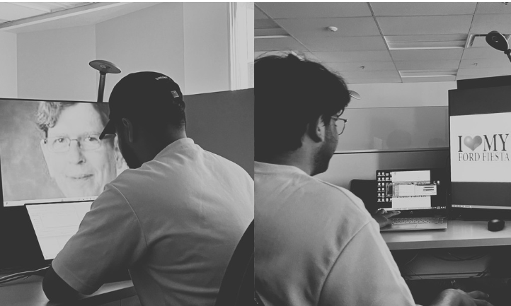

WALLPAPER BANDIT STRIKES AGAIN
In recent weeks, an unknown, unhinged suspect has been reportedly changing the wallpapers of student’s laptops. “If I see Norm Bartley on my screen again after I’m done pissing...” said a local Electrical Engineering student after leaving his laptop unattended for less than 20 seconds. This is the latest in a string of incidents dating back to May of this year. A local vigilante by the name of Qasim has spoken out in light of these incidents, declaring the offender’s actions as “anti-Qasim behavior, especially after the suspect’s most recent work.
“WHY IS MY BACKGROUND A PICTURE OF MAC HALL?” — Terrified Electrical Engineering Student
GAME SEGMENT: WTF IS GOING ON
A shopping cart with mysterious contents has been abandoned in a stairwell. What’s the story?
Send your answers via goose to the SSE.